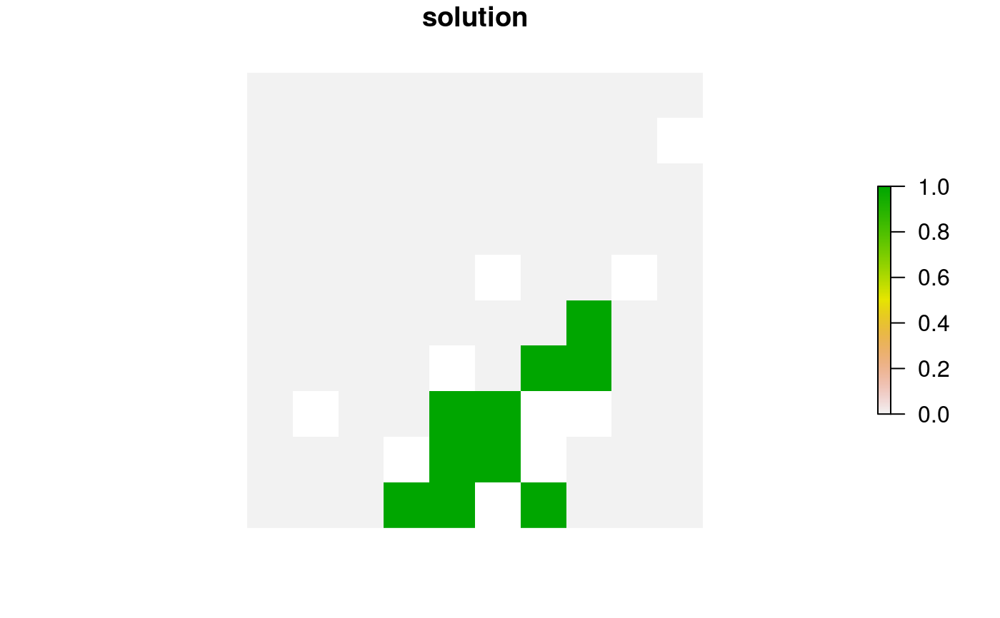
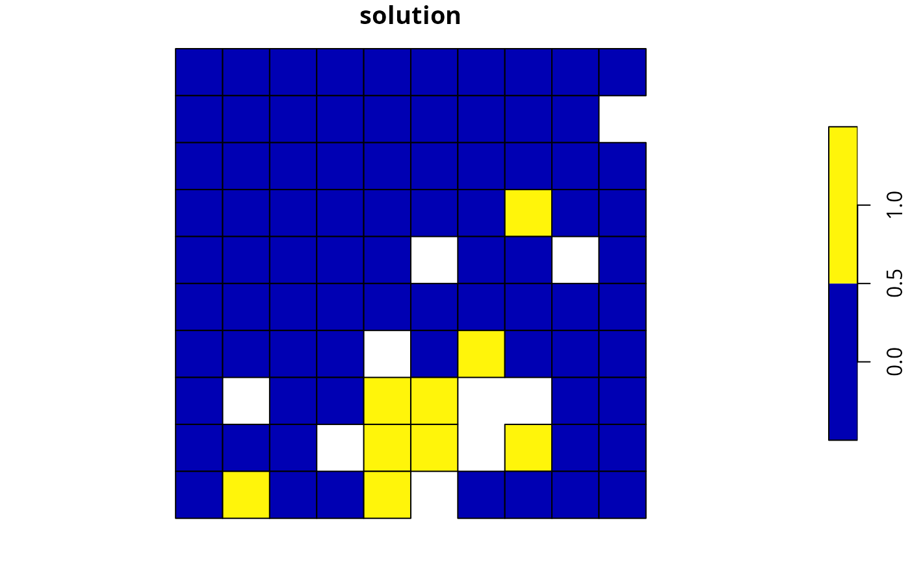
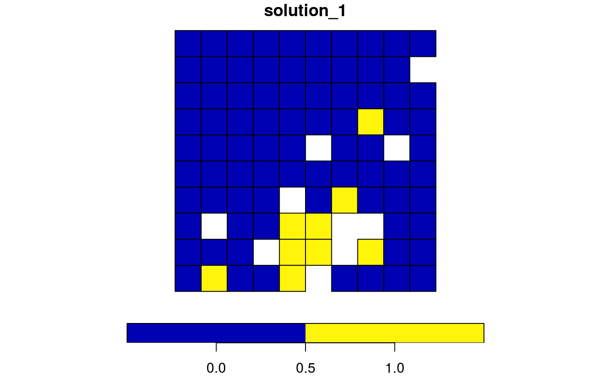
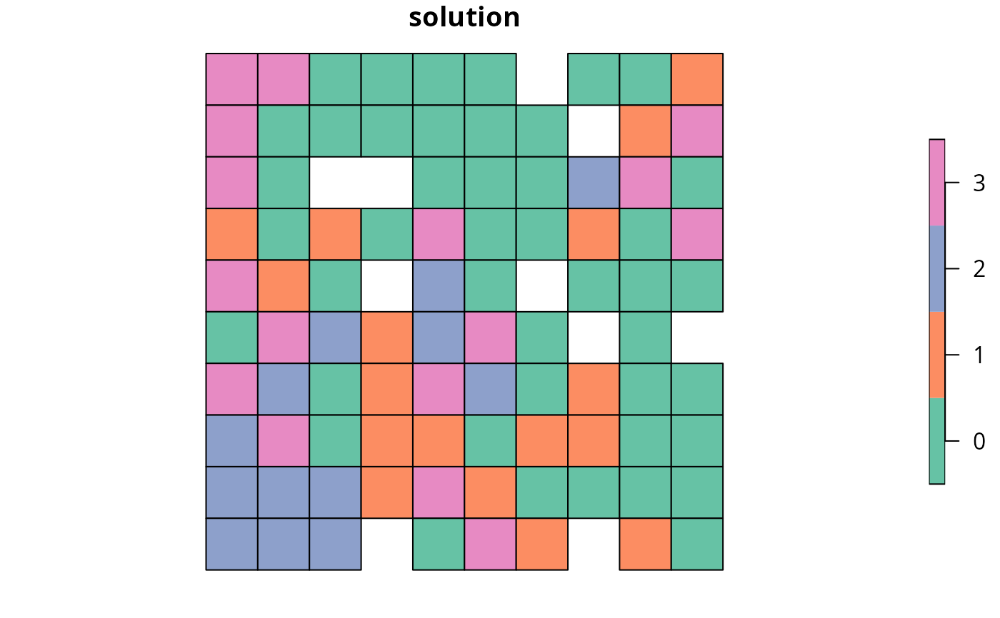
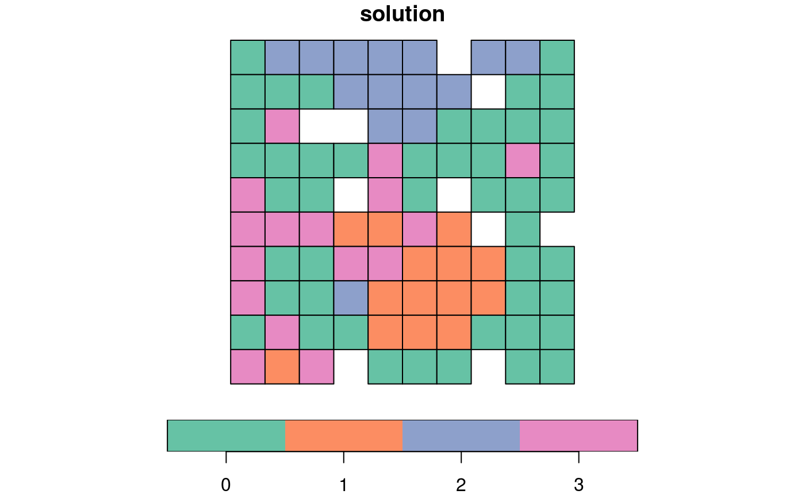

Solve a conservation planning problem().
# S4 method for OptimizationProblem,Solver
solve(a, b, ...)
# S4 method for ConservationProblem,missing
solve(a, b, ..., run_checks = TRUE, force = FALSE)problem() (i.e., ConservationProblem) or
OptimizationProblem object.
Solver object. Not used if a is an
ConservationProblem object.
arguments passed to compile().
logical flag indicating whether presolve checks
should be run prior solving the problem. These checks are performed using
the presolve_check() function. Defaults to TRUE.
Skipping these checks may reduce run time for large problems.
logical flag indicating if an attempt to should be
made to solve the problem even if potential issues were detected during
the presolve checks. Defaults to FALSE.
A numeric, matrix,
RasterLayer, Spatial,
or sf::sf() object containing the solution to the problem.
Additionally, the returned object will have the following additional
attributes: "objective" containing the solution's objective,
"runtime" denoting the number of seconds that elapsed while solving
the problem, and "status" describing the status of the solution
(e.g., "OPTIMAL" indicates that the optimal solution was found).
In most cases, the first solution (e.g., "solution_1")
will contain the best solution found by the solver (note that this
may not be an optimal solution depending on the gap used to solve
the problem and noting that the default gap is 0.1).
After formulating a conservation planning problem(),
it can be solved using an exact algorithm solver (see solvers
for available solvers). If no solver has been explicitly specified,
then the best available exact algorithm solver will be used by default
(see add_default_solver(). Although these exact algorithm
solvers will often display a lot of information that isn't really that
helpful (e.g., nodes, cutting planes), they do display information
about the progress they are making on solving the problem (e.g., the
performance of the best solution found at a given point in time). If
potential issues were detected during the
presolve checks (see presolve_check())
and the problem is being forcibly solved (i.e., with force = TRUE),
then it is also worth checking for any warnings displayed by the solver
to see if these potential issues are actually causing issues
(e.g., Gurobi can display warnings that include
"Warning: Model contains large matrix coefficient range" and
"Warning: Model contains large rhs").
The object returned from this function depends on the argument to
a. If the argument to a is an
OptimizationProblem object, then the
solution is returned as a logical vector showing the status
of each planning unit in each zone. However, in most cases, the argument
to a will be a ConservationProblem object, and so
the type of object returned depends on the number of solutions
generated and the data format used to specify the planning units:
a has numeric planning unitsThe solution will be
returned as a numeric vector. Here, each element in the vector
corresponds to a different planning unit.
Note that if a portfolio is used to generate multiple solutions,
then a list of such numeric vectors will be returned.
a has matrix planning unitsThe solution will be
returned as a matrix object.
Here, rows correspond to different planning units,
and fields (columns) correspond to different management zones.
Note that if a portfolio is used to generate multiple solutions,
then a list of such matrix objects will be returned.
a has Raster planning unitsThe solution
will be returned as a Raster object.
If the argument to x contains a single
management zone, then a RasterLayer object will be returned.
Otherwise, if the argument to x contains multiple zones, then a
RasterStack object
will be returned containing a different layer for each management zone.
Note that if a portfolio is used to generate multiple solutions,
then a list of such Raster objects will be returned.
a has Spatial, sf::sf(), or data.frame
planning unitsThe solution will be returned in the same data format as the planning
units.
Here, each row corresponds to a different planning unit,
and fields contain solutions.
If the argument to a contains a single zone, then the solution object
will contain fields (columns) that solution the values.
Specifically, the field name(s) containing the solution values
be will named as "solution_XXX" where "XXX" corresponds to a solution
identifier (e.g., "solution_1").
If the argument to a contains multiple zones, then the fields
containing solutions will be named as "solution_XXX_YYY" where
"XXX" corresponds to the solution identifier and "YYY" is the name
of the management zone (e.g., "solution_1_zone1").
See problem() to create conservation planning problems, and
presolve_check() to check problems for potential issues.
Also, see the category_layer() and category_vector() function to
reformat solutions that contain multiple zones.
# set seed for reproducibility
set.seed(500)
# load data
data(sim_pu_raster, sim_pu_polygons, sim_pu_sf, sim_features,
sim_pu_zones_stack, sim_pu_zones_sf, sim_features_zones)
# build minimal conservation problem with raster data
p1 <- problem(sim_pu_raster, sim_features) %>%
add_min_set_objective() %>%
add_relative_targets(0.1) %>%
add_binary_decisions() %>%
add_default_solver(verbose = FALSE)
# \dontrun{
# solve the problem
s1 <- solve(p1)
# print solution
print(s1)
#> class : RasterLayer
#> dimensions : 10, 10, 100 (nrow, ncol, ncell)
#> resolution : 0.1, 0.1 (x, y)
#> extent : 0, 1, 0, 1 (xmin, xmax, ymin, ymax)
#> crs : NA
#> source : memory
#> names : layer
#> values : 0, 1 (min, max)
#>
# print attributes describing the optimization process and the solution
print(attr(s1, "objective"))
#> solution_1
#> 1987.399
print(attr(s1, "runtime"))
#> solution_1
#> 0.004
print(attr(s1, "status"))
#> solution_1
#> "OPTIMAL"
# calculate feature representation in the solution
r1 <- eval_feature_representation_summary(p1, s1)
print(r1)
#> # A tibble: 5 × 5
#> summary feature total_amount absolute_held relative_held
#> <chr> <chr> <dbl> <dbl> <dbl>
#> 1 overall layer.1 83.3 8.91 0.107
#> 2 overall layer.2 31.2 3.13 0.100
#> 3 overall layer.3 72.0 7.34 0.102
#> 4 overall layer.4 42.7 4.35 0.102
#> 5 overall layer.5 56.7 6.01 0.106
# plot solution
plot(s1, main = "solution", axes = FALSE, box = FALSE)

# }
# build minimal conservation problem with polygon (Spatial) data
p2 <- problem(sim_pu_polygons, sim_features, cost_column = "cost") %>%
add_min_set_objective() %>%
add_relative_targets(0.1) %>%
add_binary_decisions() %>%
add_default_solver(verbose = FALSE)
# \dontrun{
# solve the problem
s2 <- solve(p2)
# print first six rows of the attribute table
print(head(s2))
#> cost locked_in locked_out solution_1
#> 1 215.8638 FALSE FALSE 0
#> 2 212.7823 FALSE FALSE 0
#> 3 207.4962 FALSE FALSE 0
#> 4 208.9322 FALSE TRUE 0
#> 5 214.0419 FALSE FALSE 0
#> 6 213.7636 FALSE FALSE 0
# calculate feature representation in the solution
r2 <- eval_feature_representation_summary(p2, s2[, "solution_1"])
print(r2)
#> # A tibble: 5 × 5
#> summary feature total_amount absolute_held relative_held
#> <chr> <chr> <dbl> <dbl> <dbl>
#> 1 overall layer.1 74.5 8.05 0.108
#> 2 overall layer.2 28.1 2.83 0.101
#> 3 overall layer.3 64.9 6.65 0.103
#> 4 overall layer.4 38.2 3.87 0.101
#> 5 overall layer.5 50.7 5.41 0.107
# plot solution
spplot(s2, zcol = "solution_1", main = "solution", axes = FALSE, box = FALSE)

# }
# build minimal conservation problem with polygon (sf) data
p3 <- problem(sim_pu_sf, sim_features, cost_column = "cost") %>%
add_min_set_objective() %>%
add_relative_targets(0.1) %>%
add_binary_decisions() %>%
add_default_solver(verbose = FALSE)
# \dontrun{
# solve the problem
s3 <- solve(p3)
# print first six rows of the attribute table
print(head(s3))
#> Simple feature collection with 6 features and 4 fields
#> Geometry type: POLYGON
#> Dimension: XY
#> Bounding box: xmin: 0 ymin: 0.9 xmax: 0.6 ymax: 1
#> CRS: NA
#> cost locked_in locked_out solution_1 geometry
#> 1 215.8638 FALSE FALSE 0 POLYGON ((0 1, 0.1 1, 0.1 0...
#> 2 212.7823 FALSE FALSE 0 POLYGON ((0.1 1, 0.2 1, 0.2...
#> 3 207.4962 FALSE FALSE 0 POLYGON ((0.2 1, 0.3 1, 0.3...
#> 4 208.9322 FALSE TRUE 0 POLYGON ((0.3 1, 0.4 1, 0.4...
#> 5 214.0419 FALSE FALSE 0 POLYGON ((0.4 1, 0.5 1, 0.5...
#> 6 213.7636 FALSE FALSE 0 POLYGON ((0.5 1, 0.6 1, 0.6...
# calculate feature representation in the solution
r3 <- eval_feature_representation_summary(p3, s3[, "solution_1"])
print(r3)
#> # A tibble: 5 × 5
#> summary feature total_amount absolute_held relative_held
#> <chr> <chr> <dbl> <dbl> <dbl>
#> 1 overall layer.1 74.5 8.05 0.108
#> 2 overall layer.2 28.1 2.83 0.101
#> 3 overall layer.3 64.9 6.65 0.103
#> 4 overall layer.4 38.2 3.87 0.101
#> 5 overall layer.5 50.7 5.41 0.107
# plot solution
plot(s3[, "solution_1"])

# }
# build multi-zone conservation problem with raster data
p4 <- problem(sim_pu_zones_stack, sim_features_zones) %>%
add_min_set_objective() %>%
add_relative_targets(matrix(runif(15, 0.1, 0.2), nrow = 5,
ncol = 3)) %>%
add_binary_decisions() %>%
add_default_solver(verbose = FALSE)
# \dontrun{
# solve the problem
s4 <- solve(p4)
# print solution
print(s4)
#> class : RasterStack
#> dimensions : 10, 10, 100, 3 (nrow, ncol, ncell, nlayers)
#> resolution : 0.1, 0.1 (x, y)
#> extent : 0, 1, 0, 1 (xmin, xmax, ymin, ymax)
#> crs : NA
#> names : zone_1, zone_2, zone_3
#> min values : 0, 0, 0
#> max values : 1, 1, 1
#>
# calculate feature representation in the solution
r4 <- eval_feature_representation_summary(p4, s4)
print(r4)
#> # A tibble: 20 × 5
#> summary feature total_amount absolute_held relative_held
#> <chr> <chr> <dbl> <dbl> <dbl>
#> 1 overall feature_1 250. 47.1 0.188
#> 2 overall feature_2 93.6 17.9 0.191
#> 3 overall feature_3 216. 41.6 0.193
#> 4 overall feature_4 128. 23.7 0.185
#> 5 overall feature_5 170. 31.6 0.186
#> 6 zone_1 feature_1 83.3 16.5 0.198
#> 7 zone_1 feature_2 31.2 5.65 0.181
#> 8 zone_1 feature_3 72.0 14.2 0.198
#> 9 zone_1 feature_4 42.7 7.56 0.177
#> 10 zone_1 feature_5 56.7 11.1 0.197
#> 11 zone_2 feature_1 83.3 15.7 0.189
#> 12 zone_2 feature_2 31.2 6.03 0.193
#> 13 zone_2 feature_3 72.0 14.5 0.201
#> 14 zone_2 feature_4 42.7 7.82 0.183
#> 15 zone_2 feature_5 56.7 10.3 0.181
#> 16 zone_3 feature_1 83.3 14.8 0.178
#> 17 zone_3 feature_2 31.2 6.22 0.199
#> 18 zone_3 feature_3 72.0 13.0 0.180
#> 19 zone_3 feature_4 42.7 8.27 0.194
#> 20 zone_3 feature_5 56.7 10.2 0.180
# plot solution
plot(category_layer(s4), main = "solution", axes = FALSE, box = FALSE)

# }
# build multi-zone conservation problem with polygon (sf) data
p5 <- problem(sim_pu_zones_sf, sim_features_zones,
cost_column = c("cost_1", "cost_2", "cost_3")) %>%
add_min_set_objective() %>%
add_relative_targets(matrix(runif(15, 0.1, 0.2), nrow = 5,
ncol = 3)) %>%
add_binary_decisions() %>%
add_default_solver(verbose = FALSE)
# \dontrun{
# solve the problem
s5 <- solve(p5)
# print first six rows of the attribute table
print(head(s5))
#> Simple feature collection with 6 features and 9 fields
#> Geometry type: POLYGON
#> Dimension: XY
#> Bounding box: xmin: 0 ymin: 0.9 xmax: 0.6 ymax: 1
#> CRS: NA
#> cost_1 cost_2 cost_3 locked_1 locked_2 locked_3 solution_1_zone_1
#> 1 215.8638 183.3344 205.4113 FALSE FALSE FALSE 0
#> 2 212.7823 189.4978 209.6404 FALSE FALSE FALSE 0
#> 3 207.4962 193.6007 215.4212 TRUE FALSE FALSE 0
#> 4 208.9322 197.5897 218.5241 FALSE FALSE FALSE 0
#> 5 214.0419 199.8033 220.7100 FALSE FALSE FALSE 0
#> 6 213.7636 203.1867 224.6809 FALSE FALSE FALSE 0
#> solution_1_zone_2 solution_1_zone_3 geometry
#> 1 1 0 POLYGON ((0 1, 0.1 1, 0.1 0...
#> 2 1 0 POLYGON ((0.1 1, 0.2 1, 0.2...
#> 3 0 0 POLYGON ((0.2 1, 0.3 1, 0.3...
#> 4 1 0 POLYGON ((0.3 1, 0.4 1, 0.4...
#> 5 1 0 POLYGON ((0.4 1, 0.5 1, 0.5...
#> 6 1 0 POLYGON ((0.5 1, 0.6 1, 0.6...
# calculate feature representation in the solution
r5 <- eval_feature_representation_summary(
p5, s5[, c("solution_1_zone_1", "solution_1_zone_2", "solution_1_zone_3")])
print(r5)
#> # A tibble: 20 × 5
#> summary feature total_amount absolute_held relative_held
#> <chr> <chr> <dbl> <dbl> <dbl>
#> 1 overall feature_1 225. 37.5 0.166
#> 2 overall feature_2 83.9 14.6 0.174
#> 3 overall feature_3 195. 34.0 0.174
#> 4 overall feature_4 114. 18.4 0.161
#> 5 overall feature_5 154. 25.1 0.163
#> 6 zone_1 feature_1 75.1 12.8 0.170
#> 7 zone_1 feature_2 28.0 4.63 0.165
#> 8 zone_1 feature_3 65.0 10.6 0.163
#> 9 zone_1 feature_4 38.0 6.29 0.165
#> 10 zone_1 feature_5 51.2 8.88 0.174
#> 11 zone_2 feature_1 75.1 11.0 0.146
#> 12 zone_2 feature_2 28.0 5.26 0.188
#> 13 zone_2 feature_3 65.0 10.7 0.165
#> 14 zone_2 feature_4 38.0 6.49 0.171
#> 15 zone_2 feature_5 51.2 7.27 0.142
#> 16 zone_3 feature_1 75.1 13.7 0.182
#> 17 zone_3 feature_2 28.0 4.75 0.170
#> 18 zone_3 feature_3 65.0 12.7 0.195
#> 19 zone_3 feature_4 38.0 5.62 0.148
#> 20 zone_3 feature_5 51.2 8.93 0.175
# create new column representing the zone id that each planning unit
# was allocated to in the solution
s5$solution <- category_vector(s5[, c("solution_1_zone_1",
"solution_1_zone_2",
"solution_1_zone_3")])
s5$solution <- factor(s5$solution)
# plot solution
plot(s5[, "solution"])

# }